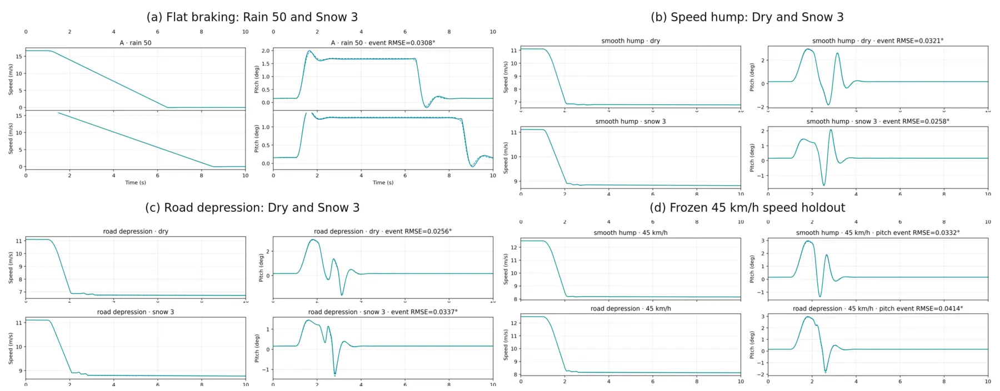
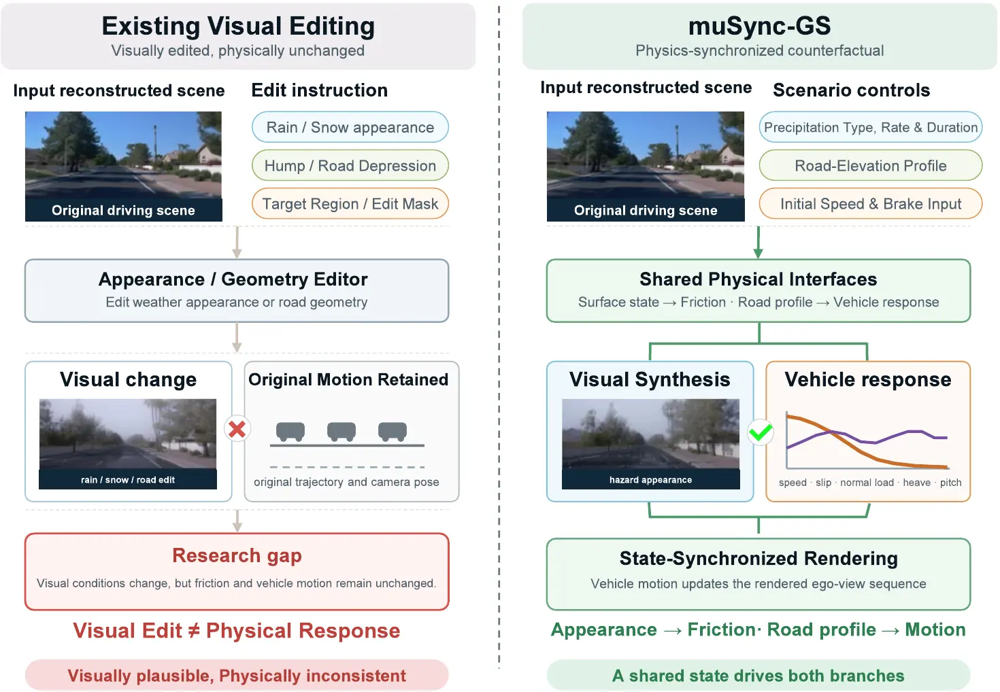
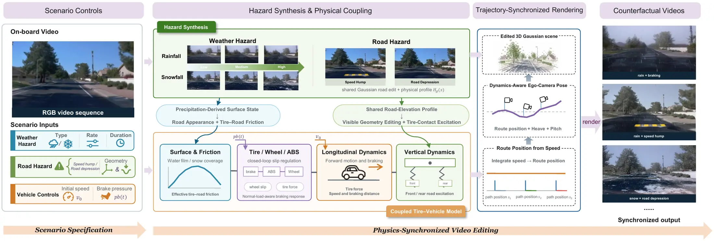
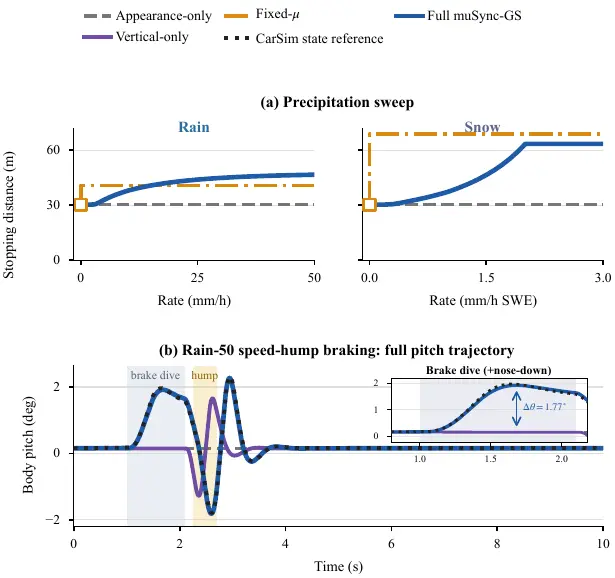
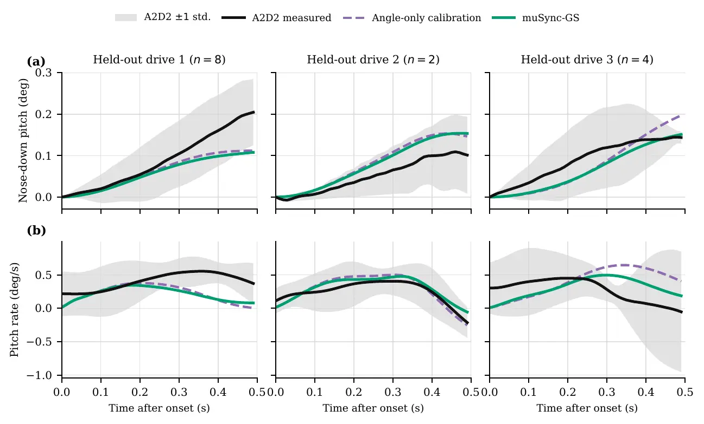
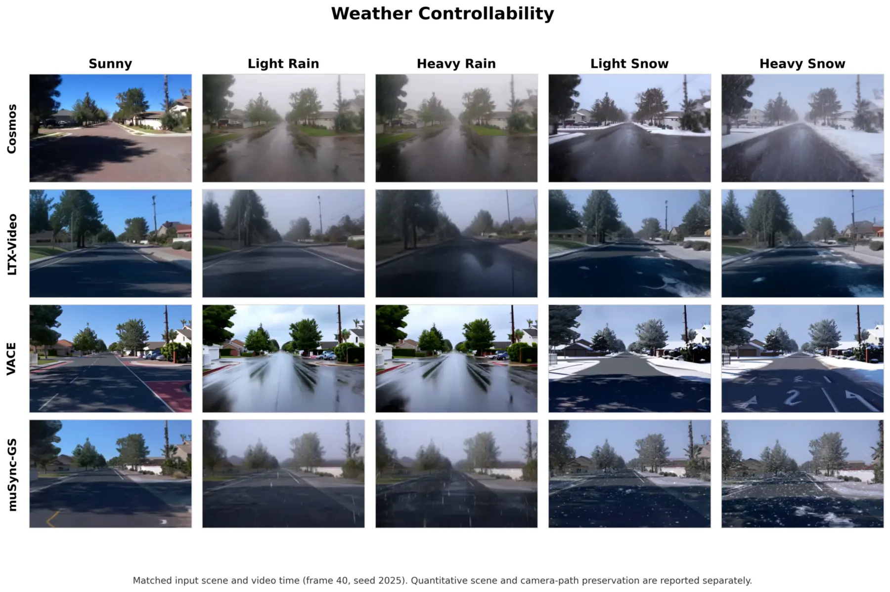
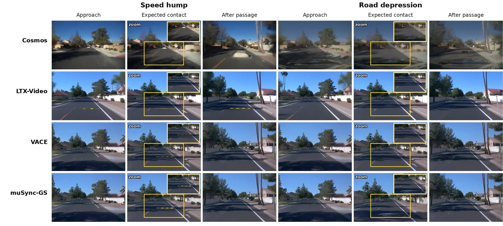

Frozen-parameter validation
Held-out CarSim controls without refitting
The reduced-order model tracks CarSim speed, body pitch, slip ratio, and per-wheel normal load across weather, braking, and signed road-profile conditions.

Frozen held-out CarSim evaluation with no parameter refitting.
Rare adverse-weather braking and uneven-road events are costly and risky to collect at scale. Existing video and 3D Gaussian editors can change weather appearance or road geometry, but usually leave tire–road interaction, vehicle response, and ego motion disconnected from the edit.
We introduce muSync-GS, a framework for physics-synchronized counterfactual driving video synthesis. Precipitation-derived surface state, a shared signed road-elevation profile, and a calibrated tire–vehicle model jointly control road appearance, friction, braking, wheel slip, normal load, heave, pitch, and rendered camera motion. This makes the visual and dynamic branches consequences of the same intervention rather than independent post-processing stages.
We validate the frozen vehicle response against CarSim, audit brake-dive behavior on real A2D2 drives, and evaluate video-level response and controllability on reconstructed Waymo scenes. The resulting videos preserve photorealistic scene appearance while exposing the physical consequences that should follow a weather or road edit.

Visual plausibility alone does not guarantee a physically consistent counterfactual. A shared physical cause closes the gap between edited pixels and the motion that should follow.
Video gallery
Weather-conditioned braking is demonstrated on two independent reconstructed routes. A dedicated third route is reserved for matched rain and snow response to Speed Hump and Sunken Road hazards.
Independent scenes · matched braking within each matrix
Rain and snow use different scenes so the road-event scene remains dedicated to geometric hazards. Each five-panel matrix shares one clock, 40 km/h initial speed, and a 2.0 MPa ABS braking command.
Dedicated road-hazard route · five matched weather levels
The dedicated route is used only for signed road hazards. Each 5.2-second matrix retains the visible feature, front- and rear-axle contact, body response, and a settled recovery at normal playback speed.
The same scenario controls enter both visual synthesis and vehicle simulation. Rendered pixels are never treated as physical measurements: weather, signed road geometry, and driver inputs first define the physical state, which then drives both appearance and motion.

Precipitation rate and duration determine water-film or snow state, controlling both road appearance and effective tire friction.
weather → surface → appearance + friction
A signed road-height profile drives both the visible Gaussian road edit and front/rear tire-contact excitation.
road profile → edit + axle excitation
Simulated station, heave, and pitch correct ego-camera poses so rendered motion follows the predicted response.
vehicle state → route timing + camera pose
We report frozen vehicle-model accuracy, video-response diagnostics, real-vehicle consistency, and visual controllability separately.
Frozen-parameter validation
The reduced-order model tracks CarSim speed, body pitch, slip ratio, and per-wheel normal load across weather, braking, and signed road-profile conditions.

Coupled video response
Continuous precipitation severity changes friction-dependent braking, while shared road geometry produces localized heave and pitch. VGGT scores are treated as protocol-specific monocular diagnostics.

Real-vehicle audit
Vehicle-specific calibration is learned from two drives and evaluated on the held-out drive, using only brake pressure and onset speed at test time.

Severity-ordered weather and localized dry-road geometry under matched protocols.


Cosmos Transfer 2.5, LTX-Video 13B, VACE 14B, and muSync-GS are compared with documented inputs, prompts, checkpoints, seeds, temporal windows, and aggregation rules.
Read the protocol in the paper →@inproceedings{musyncgs2027,
title = {muSync-GS: Physics-Synchronized Driving Video Synthesis
for Weather and Geometric Road Hazards},
author = {Chen, Yang and Zhu, Yicheng and Li, Tao and Bian, Zilin},
booktitle = {Venue pending},
year = {2027}
}Venue and final publication details will be updated when available.